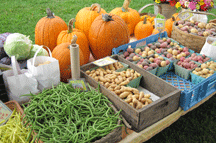

|  |
|
Nourishment
As a child I knew I should feel better.
When I was on my own, I refered to books by Adelle Davis, and others, trying different foods and eating organic or the best quality food I could find.
I discovered the mercury from my mercury amalgam dental fillings had been causing me to feel sick for years, inspite of eating “healthy food.”
I also began to reduce my exposure to toxic substances: chemicals in laundry, personal care and building products; fragrances, chlorine, mold, plastics, formaldehyde, etc.
Organic food and a non-toxic environment
are both vital for good health.
(see my website www.healthbrochures.info)
While searching for ways to heal my body from the mercury, I found Weston Price’s book, Nutrition and Physical Degeneration. It was common sense. And, he was not selling anything!
Weston A. Price, DDS traveled worldwide and
discovered people in traditional cultures eating
their traditional foods were healthy.
People around the world have adapted to
eating a wide-variety of local foods.
• Local foods eaten fresh in season.
• Wide variety of whole foods: plants, fruits, nuts, herbs, and spices.
• Source of protein and fat: mammals (meat, milk, cheese, eggs), birds, reptiles, fish, crustaceans, mollusks, insects
• Traditional methods of food preparation, cooking and storage.
• Foods grown in soil naturally high in minerals and organic matter.
No refined and processed foods (white flour, white sugar, vegetable oils and canned goods)
For more cultural information:
• Travel, meet people from different cultures
• Cook using authentic, traditional cookbooks and foods
• Eat at restaurants serving traditional foods
• Cooking and travel programs
• Books:
Nourishing Traditions, by Sally Fallon
Keeping Food Fresh, Old World Techniques and Recipes, The Gardeners & Farmers of Terre Vivante
Wild Fermentation, Sandor Ellix Katz
Many chefs are now using fresh foods from local farms.
There is an explosion of quality artisan cheese makers, brewers, bakers, producers of grass-fed meat, poultry, eggs, etc.
It is an exciting time!
Fresh • Local • Seasonal • Wide Variety • Organic
|
|
|
|
| To understand raising healthy animals, I search for information on how animals live in the wild.
Sheep are grazers: diversity of grasses, plants, herbs. They also browse on woody vegetation.
Chickens are insectivores: bugs, insects and worms found in mulch and soil. They also eat grass, weeds, and garden plants such as kale, cabbage, most greens, tomatoes, fruit and whole grains (corn, oats, barley).
Geese are grazers: grasses, seeds, roots, bulbs, berries and fruits with some insects and snails.
Resources:
Nourishment, What Animals Can teach Us About Rediscovering Our Nutritional Wisdom, Fred Provenza
Wild Health, Lessons in Natural Wellness from the Animal Kingdom, Cindy Engel
Folk Medicine, D.C. Jarvis, M.D.
In Nourishment, Fred Provenza wrote about the harm artificial substances such as fake sweeteners, processed sugars and vitamins can do to the body’s “ability to self regulate”.
He said, animals sensing a deficiency will seek out a food or substance to fulfill that need, they do not prophylactically treat themselves.
Sheep have not lost the ability to seek out and eat foods or minerals that will balance their nutritional needs.
To make up for the lack of diversity in fenced-in pastures compared to free-range sheep, I grow many herbs, plants and shrubs to feed them. Oak, maple and pine branches come from the forest, seaweed from the ocean, and I buy dried kelp, minerals and clay. The photo of the quince bush (left) shows how they ate all the leaves and stems they could reach. They ate quince first, before grazing! In the fall, sheep graze on nutritious acorns. The sheep are smart when it comes to eating hay during the winter. The hay may look good quality and green to me… most times they eat it vigorously, and other times refuse to eat it. What do they smell or taste… poor nutritional quality, low-level mold, other contaminants?
It is difficult to find organic hay from fields fertilized with manure. Most farmers use commercial fertilizers which harm soil organisms and bind up the soil minerals. With this deficient hay, the sheep eat a huge amount of salt and minerals, compared to when they eat fresh pasture grass.
Every animal’s needs are different. No two are alike!
• Male, female (pregnancy, lactation), young, old.
Needs are different every day, every season.
There is no one diet that will work for all animals all the time.
Need access to a wide diversity of plant and animal foods.
Need time to adapt to their local environment.
Exposure to different foods begins in the womb, and continues with lactation, so when the young begin eating food they are already familiar with the taste and smell of foods.
Fertile, alive soil produces healthy plants, animals and people.
The basis of any healthy food, from the land or water,
is a clean, non-toxic environment.
|
|